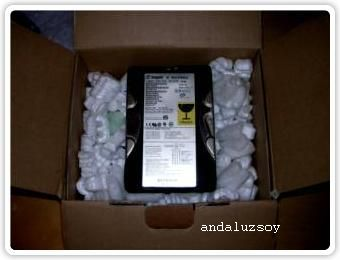
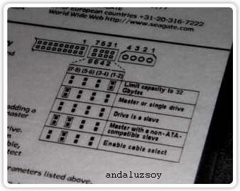
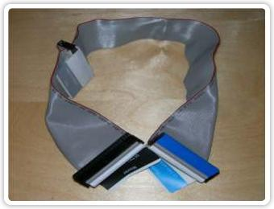
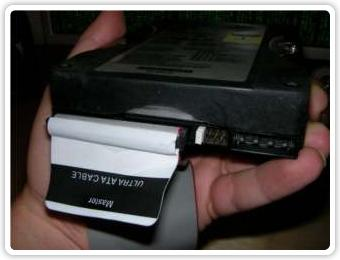
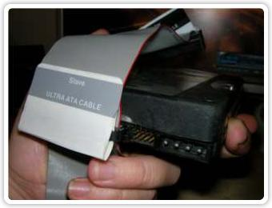

CONFIGURAR UNIDADES DE DISCO DURO
Primero compramos un disco duro interno.-

Para empezar hablaremos de esto mismo, ” los jumpers ” con estas pequeñas pestañitas podemos configurar la posición que queremos que nuestra placa base nos detecte los Discos Duros.
Si nos fijamos en la carcasa del Disco Duro veremos una especie de esquema que nos indica en que posición debemos situar nuestro ( Jumper ) ….

Podemos configurar nuestros Disco Duro como Master, Slave o Cable Select.
Master : Unidad primaria, el el disco duro con el que arranca el PC.
Slave : Unidad secundaria, se suele usar como almacén de datos.
Cable Select : Con esta opción la posición de la unidad dependerá de la ” Faja de conexión de datos “.

Como podéis ver en la imagen de arriba la ” Faja de conexión de datos ” tiene 3 clavijas y cada una de ellas tiene una posición especifica para conectar los Discos dependiendo de nuestras necesidades. Cabe destacar que la clavija que esta mas alejada siempre va conectada a la placa base.
Veamos un ejemplo ……
Vamos a situarnos dentro de un PC donde solo existe un solo disco duro configurado como ( Master ) osea unidad primaria donde esta instalado el sistema operativo con lo cual esta unidad es la de arranque.
Este es nuestro Disco Duro donde tenemos instalado el sistema operativo ( Master )

Y esta seria la segunda unidad configurada como esclava ( Slave ) para almacenar datos por ejemplo …

Esta configuración entre ( Master y Slave ) también se puede aplicar a otros dispositivos como unidades de CD o DVD combinados entre si.
Andaluzsoy